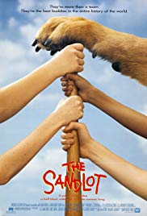

The Sandlot is a 1993 American coming of age sports comedy film co written, directed, and narrarated by David Mickey Evans which tells the story of a group of young baseball players during the summer of 1962. It stars Tom Guiry,Mike Vitar, Karen Allen, Denis Leary, and James Earl Jones.
